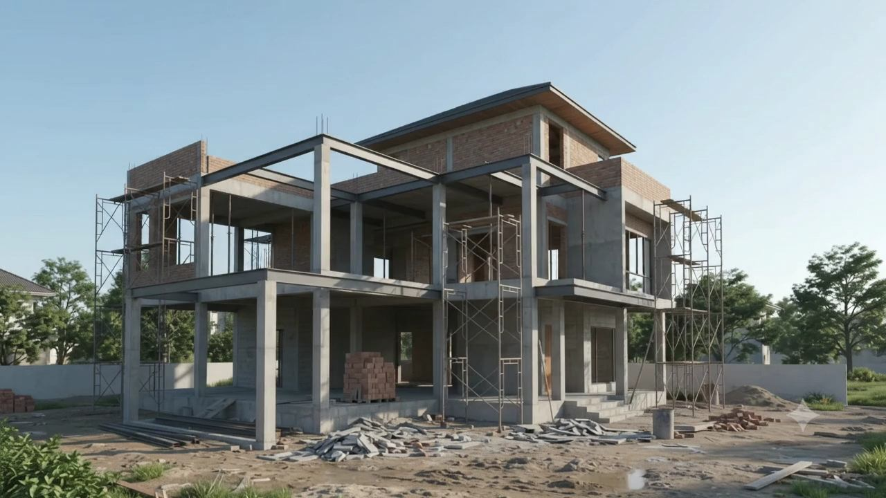
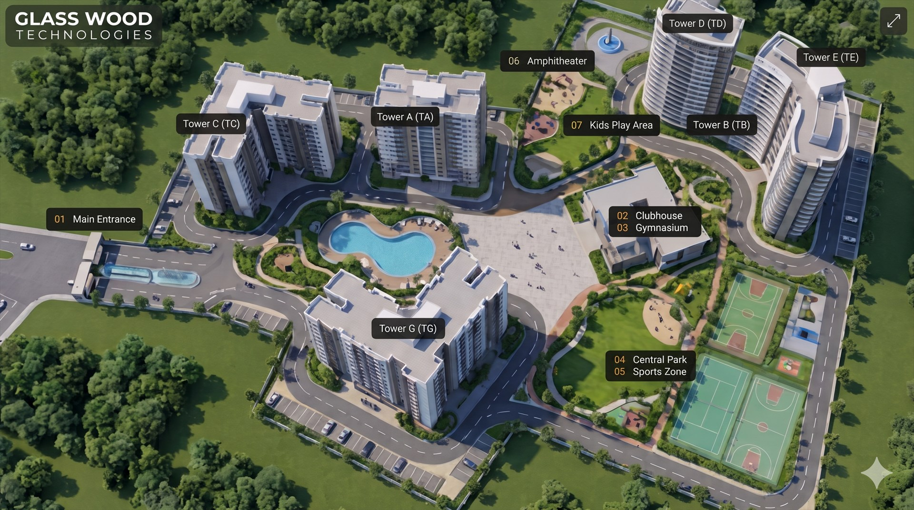

01 / CLARITY
Make the complex
feel clear.
Strong decisions begin with a shared understanding of the problem and the people it affects.
Design · Technology · Progress
We bring clear thinking, thoughtful design and dependable technology together— turning ambitious ideas into experiences people can rely on.
Scroll-driven build sequence
Scroll to see the form come together—from its foundation to the finished experience.
Keep scrolling to assemble

A clear view from the start
We believe the best outcomes come from joining the dots early—between people, design and technology.
Glass Wood Technologies connects thoughtful design and dependable technology from the first idea to the finished experience. We approach each challenge with curiosity, bring structure to complexity, and pay attention to the details that make the whole thing feel right.
Good work, considered from every angle
We bring people, product and technology into the same conversation—then keep them moving together.
Strong decisions begin with a shared understanding of the problem and the people it affects.
Product thinking, design and engineering work best as one connected practice.
Thoughtful foundations make room to learn, adapt and keep making progress.
GWT / Experience lab
An aerial master-plan view brings the towers, shared amenities, access and landscape together as one connected place.
Request a demo
One shared foundation. Different ways to bring it to life.
01 · Product
Find the right problem, shape the journey, and make each interaction feel considered.
Explore02 · Experience
Create responsive, accessible experiences that make complex things easier to use.
Explore03 · Engineering
Build a dependable foundation, then keep learning and improving as it grows.
ExploreOne connected process
We make the complex feel clear, then keep moving with care and intention.
We start with good questions and a shared understanding of what matters most.
We bring design and technology into the same conversation, early and often.
We turn a strong foundation into considered work that’s ready for what comes next.
A better kind of progress
Build with care.
Leave room to grow.
Ready when you are
Start with a conversation. We’ll bring curiosity, clear thinking and a fresh perspective.
Request a demo